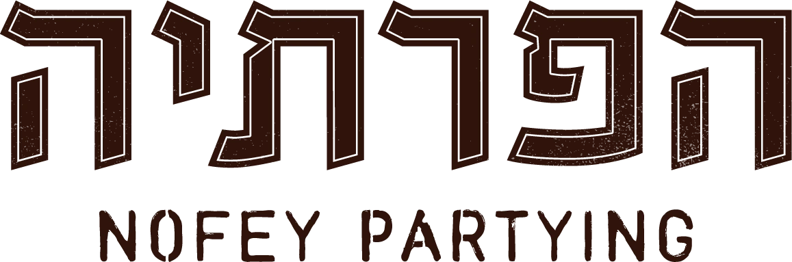
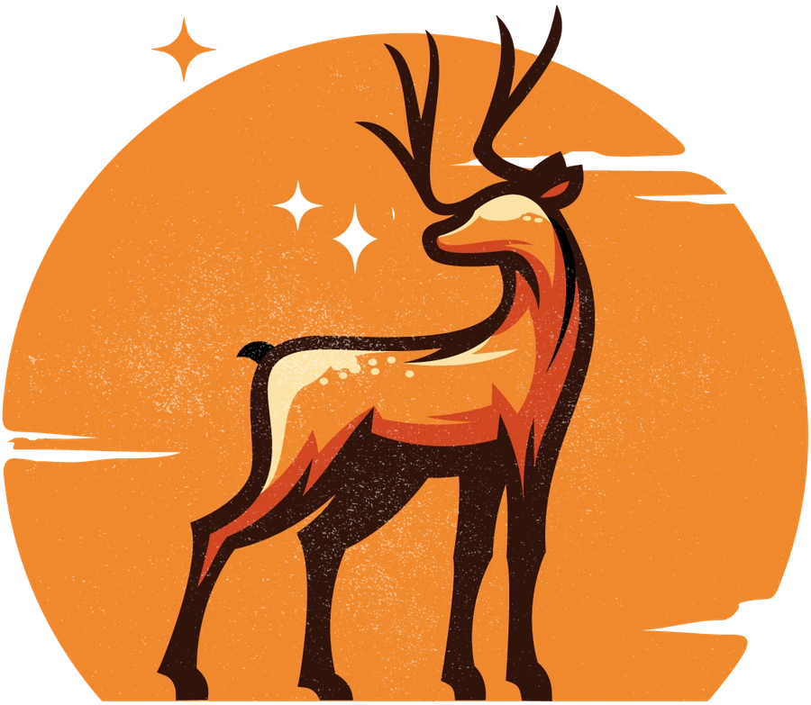

הפאב הקהילתי של נופי פרת
פותחת את הצוות
להצטרפות
כבר שנה
של ערבים טובים
ועכשיו רוצים
להיות יותר
מה זה אומר
בפועל?
ערב הפעלה אחד
בערך כל חודשיים
מגייסים מתנדבים לערב
מקימים, מפעילים
ומנקים בסוף
ישיבת צוות
פעם בחודש או חודשיים
וזמינות בוואטסאפ
כשצריך
לכל אחד
תחום משלו
לא צריך ניסיון
צריך
רצון אמיתי
ויכולת
להתחייב
בואו להיות חלק
מצוות הפרתיה
כל הפרטים וההרשמה בקישור
פאב קהילתי בהתנדבות · נופי פרת

הפרתיה
פאב קהילתי · נופי פרת
ההרשמה לצוות פתוחה